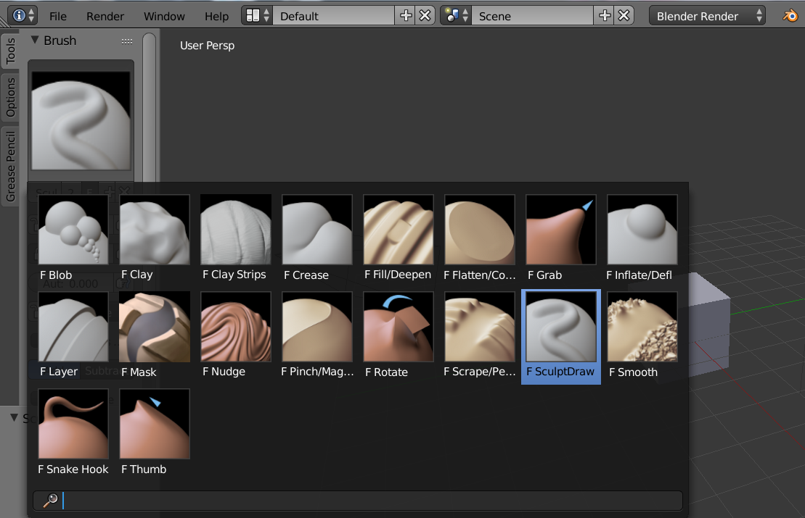

Options¶
Tools Tab¶
Brush¶
- Brush Type
Brushes are brush presets. They are a combination of a ‘tool’, along with stroke, texture, and options.
Sculpt brushes.
- Blob
- Pushes mesh outward or inward into a spherical shape with settings to control the amount of pinching at the edge of the sphere.
- Clay
- Similar to the Draw brush, but includes settings to adjust the plane on which the brush acts.
- Clay Strips
- Similar to the Clay brush, but it uses a cube test to define the brush area of influence rather than a sphere.
- Crease
- Creates sharp indents or ridges by pushing or pulling the mesh, while pinching the vertices together.
- Draw
- Moves vertices inward or outward, based the average normal of the vertices contained within the drawn brush stroke.
- Fill
- Works like the Flatten brush, but only brings vertices below the brush plane upwards. The inverse of the Scrape brush is to Deepen by pushing vertices above the plane downward.
- Flatten
- The Flatten brush finds an ‘area plane’ located by default at the average height above/below the vertices within the brush area. The vertices are then pulled towards this plane. The inverse of the Flatten brush is the Contrast brush which pushes vertices up or down away from the brush plane.
- Grab
- Used to drag a group of points around. Unlike the other brushes, Grab does not modify different points as the brush is dragged across the model. Instead, Grab selects a group of vertices on mousedown, and pulls them to follow the mouse. The effect is similar to moving a group of vertices in 编辑模式 with proportional-editing enabled, except that Grab can make use of other 雕刻模式 options (like textures and symmetry).
- Inflate
- Similar to Draw, except that vertices in Inflate mode are displaced in the direction of their own normals.
- Layer
- This brush is similar to Draw, except that the height of the displacement layer is capped. This creates the appearance of a solid layer being drawn. This brush does not draw on top of itself; a brush stroke intersects itself. Releasing the mouse button and starting a new stroke will reset the depth and paint on top of the previous stroke.
- Nudge
- Moves vertices in the direction of the brush stroke.
- Pinch
- Pulls vertices towards the center of the brush. The inverse setting is Magnify, in which vertices are pushed away from the center of the brush.
- Rotate
- Rotates vertices within the brush in the direction the cursor is moved.
- Scrape
- The Scrape brush works like the Flatten brush, but only brings vertices above the plane downwards. The inverse of the Scrape brush is to Peak by pushing vertices above the plane up away from the plane.
- Smooth
- As the name suggests, eliminates irregularities in the area of the mesh within the brush’s influence by smoothing the positions of the vertices.
- Snake Hook
- Pulls vertices along with the movement of the brush to create long, snake-like forms.
- Thumb
- Similar to the Nudge brush, this one flattens the mesh in the brush area, while moving it in the direction of the brush stroke.
- Radius
- This option controls the radius of the brush, measured in pixels.
Fallows you to change the brush size interactively by dragging the mouse and thenLMB(the texture of the brush should be visible inside the circle). Typing a number then enter while usingFallows you to enter the size numerically. Brush size can be affected by enabling the pressure sensitivity icon, if you are using a Graphics Tablet. - Strength
Controls how much each application of the brush affects the model. For example, higher values cause the Draw brush to add depth to the model more quickly, and cause the Smooth brush to smooth the model more quickly. This setting is not available for Grab, Snake Hook, or Rotate.
You can change the brush strength interactively by pressing
Shift-Fin the 3D视图 and then moving the brush and thenLMB. You can enter the size numerically also while inShift-Fsizing. Brush strength can be affected by enabling the pressure sensitivity icon, if a supported tablet is being used.Tip
If the range of strengths doesn’t seem to fit the model (for example, if even the lowest strength setting still makes too large of a change on the model) then you can scale the model (in 编辑模式, not 物体模式). Larger sizes will make the brush’s effect smaller, and vice versa.
- Autosmooth
- Sets the amount of smoothing to be applied to each stroke.
- Normal Weight
Constrains brush movement along the surface normal. Especially useful with the Grab Brush, can be temporarily enabled by holding
Ctrl.Applies to Grab and Snake Hook brushes.
- Sculpt Plane
- Use this menu to set the plane in which the sculpting takes place.
- Front Faces Only
- When enabled, the brush only affects vertices that are facing the viewer.
- Add/Subtract
- TODO.
- Accumulate
- Causes stroke dabs to accumulate on top of each other.
Texture Panel¶
- Texture
- Texture to be used to determine the strength of brush.
- Brush Mapping
Sets the way the texture is mapped to the brush stroke:
- Fixed
- If Fixed is enabled, the texture follows the mouse, so it appears that the texture is being dragged across the model.
- Tiled
- The Tile option tiles the texture across the screen, so moving the brush appears to move separately from the texture. The Tile option is most useful with tileable images, rather than procedural textures.
- 3D
- The 3D option allows the brush to take full advantage of procedural textures. This mode uses vertex coordinates rather than the brush location to determine what area of the texture to use.
- Angle
This is the rotation angle of the texture brush. It can be changed interactively via
Ctrl-Fin the 3D视图. While in the interactive rotation you can enter a value numerically as well. Can be set to:- User
- Directly input the angle value.
- Rake
- Angle follows the direction of the brush stroke. Not available with 3D textures.
- Random
- Angle is randomized.
- Rake
- TODO.
- Random
- TODO.
- Offset
- Fine tunes the texture map placement in the x, y, and z axes.
- Size
- This setting allows you to modify the scaling factor of the texture. Not available for Drag textures.
- Sample Bias
- Value added to texture samples.
Stroke Panel¶
- Stroke Method
- Defines the way brush strokes are applied to the mesh:
- Dots
- Standard brush stroke.
- Drag Dot
- Creates a single displacement in the brush shape. Click then drag on mesh to desired location, then release.
- Space
- Creates brush stroke as a series of dots, whose spacing is determined by the Spacing setting. Spacing represents the percentage of the brush diameter.
- Anchored
- Creates a single displacement at the brush location. Clicking and dragging will resize the brush diameter. When Edge to Edge the brush location and orientation is determined by a two point circle, where the first click is one point, and dragging places the second point, opposite from the first.
- Airbrush
- Flow of the brush continues as long as the mouse click is held, determined by the Rate setting. If disabled, the brush only modifies the model when the brush changes its location. This option is not available for the Grab brush.
The following parameters are available for the Dots, Space, and Airbrush strokes:
- Jitter
- Jitters the position of the brush while painting.
- Smooth stroke
Brush lags behind mouse and follows a smoother path. When enabled, the following become active:
- Radius
- Sets the minimum distance from the last point before stroke continues.
- Factor
- Sets the amount of smoothing
Curve Panel¶
The Curve section allows you to use a curve control to the right to modify the intensity of the brush from its centre (left part of the curve) towards its borders (right part of the curve).
See also
Read more about using the Curve Widget.
Symmetry Panel¶
- 镜像
- 镜像 the brush strokes across the selected local axes. Note that if you want to alter the directions the axes point in, you must rotate the model in 编辑模式, not 物体模式
- Radial
- These settings allow for radial symmetry in the desired axes. The number determines how many times the stroke will be repeated within 360 degrees around the central axes.
- Feather
- Reduces the strength of the stroke where it overlaps the planes of symmetry.
- Lock
- These three buttons allow you to block any modification/deformation of your model along selected local axes, while you are sculpting it.
- Tiling
- Using this option allows you to seamlessly tile your strokes along the given axes.
- Tile Offset
- The default tile size is set to one BU. The offset allows the option to alter the tile size along all three axes.
Options Tab¶
Overlay Panel¶
When enabled, the brush texture is shown in the viewport
- View
- The eye icon is used as a toggle to show or hide the given brush texture
- Alpha
- You can change the amount of transparency used when showing the texture using the Alpha slider
- Stroke Overlay
- The brush icon allows you to turn off the viewport overlay during strokes
Options Panel¶
- Gravity
- Factor
- Setting the factor allows you to add gravity to your brush strokes, giving it a draping effect.
- Orientation
- Using another object, the gravity can be oriented to the set object’s local Z axis, changing the direction of the gravity.
- Threaded Sculpt
- Takes advantage of multiple CPU processors to improve sculpting performance.
- Fast Navigation
- For Multires models, show low resolution while navigation the viewport.
- Use Deform Only
- Limits active modifiers on the active object to Deform modifiers, and Multiresolution
- Show Diffuse Color
- Allows the active object to show it’s diffuse color when sculpting
- Unified 设置:
- Size
- Forces the brush size to be shared across brushes.
- Strength
- Forces the brush strength to be shared across brushes.
- Color
- Not Used in 雕刻模式
- Show Brush
- Shows the brush shape in the viewport.
- Color (Add/Subtract)
- Set the color of the brush ring when its particular effect is active
Appearance Panel¶
- Show Brush
- Shows the brush shape in the viewport.
- Color (Add/Subtract)
- Set the color of the brush ring when its particular effect is active
- Custom Icon
- Append an image file to the active brush as an icon.